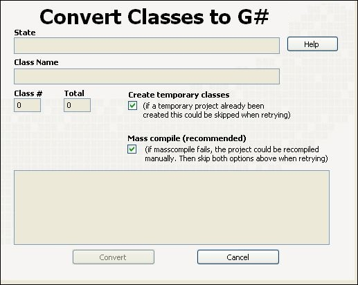

Start convert.
This tool will convert all Endevo GOOP3 and OpenGOOP classes to G# or upgrade all G# classes to the latest template version. All classes in the active project will be updated.
The following steps are performed:
1. The active project classes are analyzed.
2. The project is closed and a new temporary project is created.
3. Dummy G# classes (with same name as the classes) are created in the temporary project.
4. The original classes utility methods are replaced with the new G# specific utility methods from the temporary project classes.
5. The orignal classes .lvclass file is updated with G# tags.
6. Mass compile of the original classes.
7. Open the original project.
8. Replace all utility methods that are missing with G#Object support methods copied from the temporary classes.
9. Done!
Notice that this process could take several minutes.

|
|
Convert Start convert. |
|
|
Cancel Cancel. |
|
|
Mass compile (recommended) If true, the updated classes are mass compiled before the original project is opened again. However, LabVIEW sometimes has problems compiling complicated code with looks of changes, therefore it might be necessary to manually open each class to recompile in a specific order. |
|
|
Create temporary classes A temporary project must always be created in order to convert the classes, however if this already has been performed previously (if the converter was terminated in a later step), this could be skipped. Notice that the last temporary project is always overwritten. |
|
|
Help Help. |
|
|
State Indicates what the class converter is doing. |
|
|
Class # Index of the processing class. |
|
|
Total Total number of classes to process. |
|
|
Class Name Name of the class currently being processed. |